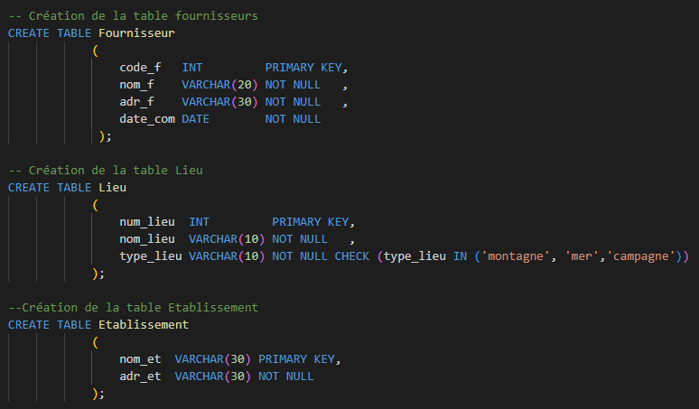

Situation
Une SAE plutot facile qui demande la création et visualisation de donnée.
Le sujet est le suivant : un MCD nous a était fournis par une entreprise qui souhaite la création d'une base de donnée
pour la gestion de cadeau pour les enfants de ses employes.
Dans cette SAE, on avait plusieurs partie : La modélisation, création, insertion, questionnement, partage des droits et visualisations
des données.
Créations et Insertion
Une fois le MLD travaillé, on a lu une dernière fois le sujet pour s'assurer de ne pas oublier de conditions spécial pour
l'insertion des données. On a donc a commencer la création des tables.

Et on a insérerer des données fournis tout en respectant les caardanilités.
Questionnement et visualisation
Puis, avec ces données, on a pu questionner la table avec des vue/fonctions, données des droits a d'autre utilisateur mais aussi
permettre une bonne visualisation des données.


Pour voir le code en entier, n'hésitez pas à aller sur google doc
SAE 2.04 .